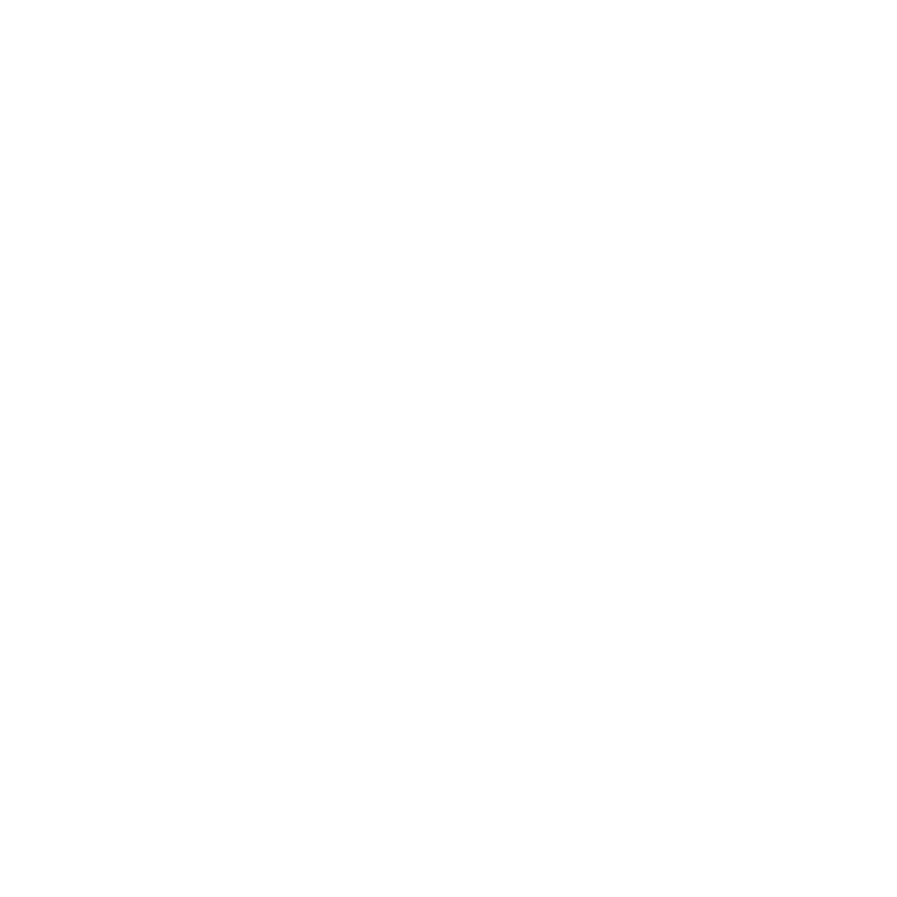
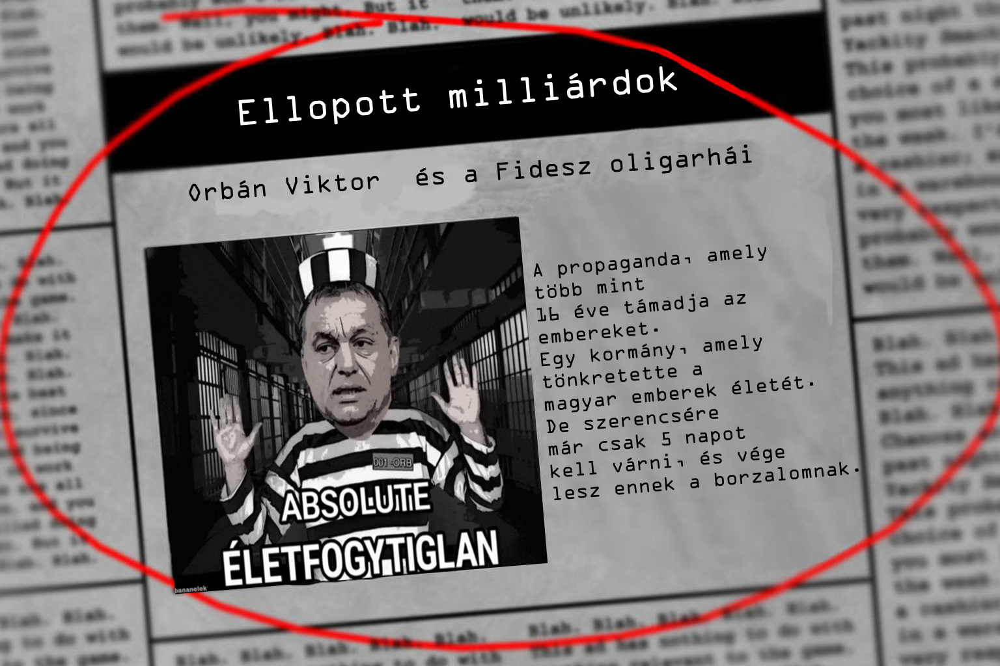

FIVE
NIGHTS
AT
FIDESZ
© Fidesz - KDNP
v26.04.12
 100%O2
100%O2

ORBÁN VIKTOR MINDIG A 11-ES KAMERÁNÁL KEZD. HASZNÁLD A CAMERA PANELBEN A PLAY SOUND GOMBOT, HOGY TÁVOL TARTSD MAGADTÓL. GYŐZŐDJ MEG RÓLA, HOGY ABBAN A KAMERÁBAN JÁTSZOD LE A HANGOT, AMELY ORBÁN MELLETT VAN, HA ABBAN JÁTSZOD LE, AHOL ELHELYEZKEDIK AKKOR KÖZELÍTENI FOG FELÉD! HA UGYANAZON A HELYEN KÉTSZER VAGY TÖBBSZÖR EGYMÁS UTÁN JÁTSZOD LE A HANGOT, AZ NEM FOG MŰKÖDNI. A HANGOK TÚL GYAKORI LEJÁTSZÁSA A KAMERÁK MEGHIBÁSODÁSÁHOZ VEZET. A JAVÍTÁSHOZ MENJ A VEZÉRLŐPULTHOZ, ÉS INDÍTSD ÚJRA A KAMERÁKAT, AHOGYAN KORÁBBAN IS TETTED. ORBÁN NEM TÁMAD A SZELLŐZŐKÖN KERESZTÜL, EZÉRT EZEN AZ ÉJSZAKÁN NEM SZÜKSÉG